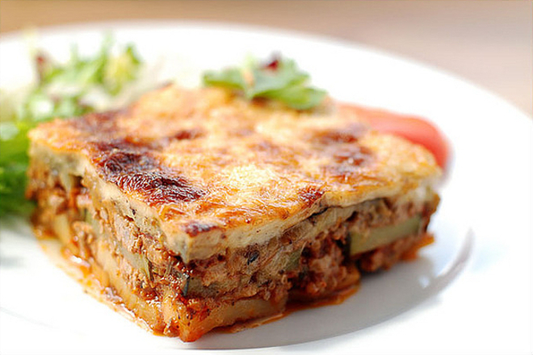

Musaka

Description
An eggplant or potato-based dish,common for the Balkans and the Middle East,
with many local and regional variations
Ingredients
- 6 eggplants
- 5 potatoes (optional)
- vegetable oil (for frying the eggplants)
- 750g beef or lamb mince (26 oz)
- 2 red onions (chopped)
- 2 cloves of garlic (chopped)
- 1 tin chopped tomatoes (400g / 14oz)
- 2 tbsp tomato paste
- 1 teaspoon sugar
- 1 glass of red wine
- Pinch of sea salt and freshly ground black pepper
- 1 bay leaf
- A pinch of cinnamon or one cinnamon stick
- 1/4 of a cup olive oil
Steps
- To prepare this Greek moussaka recipe, begin by preparing the eggplants.
Season with salt and place in a colander for about half an hour.
- Rinse the eggplants with plenty of water and squeeze with your hands, to get rid of the excessive water. Pat
them dry and fry in plenty of oil, until nicely colored. Place the fried eggplants on some paper, in order
to absorb the oil.
- If you are adding potatoes to your moussaka, now its time to slice them into 0.5cm, half a finger width
slices.
- Prepare the meat sauce for the moussaka. Heat a large pan to medium-high heat and add the olive oil. Stir in
the chopped onions and sauté, until softened and slightly colored. Stir in the mince breaking it up with a
wooden spoon and sauté.
- Prepare the béchamel sauce for the moussaka. Use a large pan to melt the butter over low-medium heat. Add
the flour whisking continuously to make a paste.
- Remove the béchamel pan from the stove and stir in the egg yolks, salt, pepper, a pinch of nutmeg and the
most of the grated cheese.
- Now its time to assemble the moussaka. For this moussaka recipe you will need a large baking dish, approx.
20x30cm / 8x12inch and 8cm/3 inch deep). Butter the bottom and sides of the pan and layer the potatoes first
(if you’re using them), then half the eggplants.
- Sprinkle with the remaining grated cheese. Preheat you oven at 180C/350F and bake your musaka for about 60
minutes or until its crust turns light golden brown.
- Serve the Moussaka with a refreshing Traditional Greek Salad and enjoy over a glass of wine!